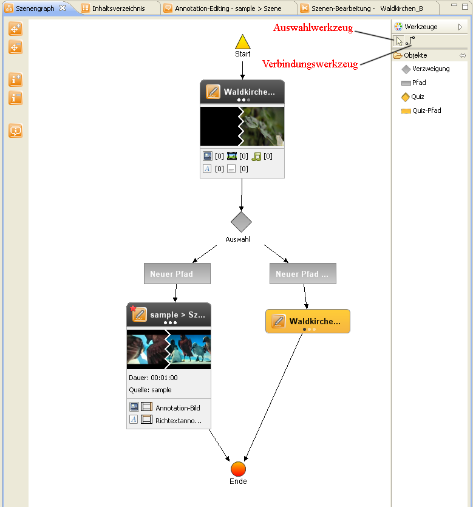

Bereits definierte Szenen werden in einem Szenenrepository
verwaltet, aus welchem sie via Drag and Drop in den Szenengraphen eingefügt werden
können. Der Editor erlaubt dem Autor verschiedene Szenenanordnungen im Graphen,
wodurch neben einfachen linearen Abläufen auch Sprünge im Video oder nonlineare
Verläufe modellierbar sind und übersichtlich visualisiert werden.
Die Toolbar des Szenengraph-Editors kann auf der rechten oder linken Seite des
Graphen positioniert werden (durch Drag and Drop). Sie bietet Tools zum Löschen
und Hinzufügen von Knoten und Kanten.
Zwischen den Szenen kann man Verzweigungen mit mehreren Pfaden/Alternativen Einfügen. Durch diese hat der Nutzer die Auswahl des Ablaufes des interaktiven-Videos.
